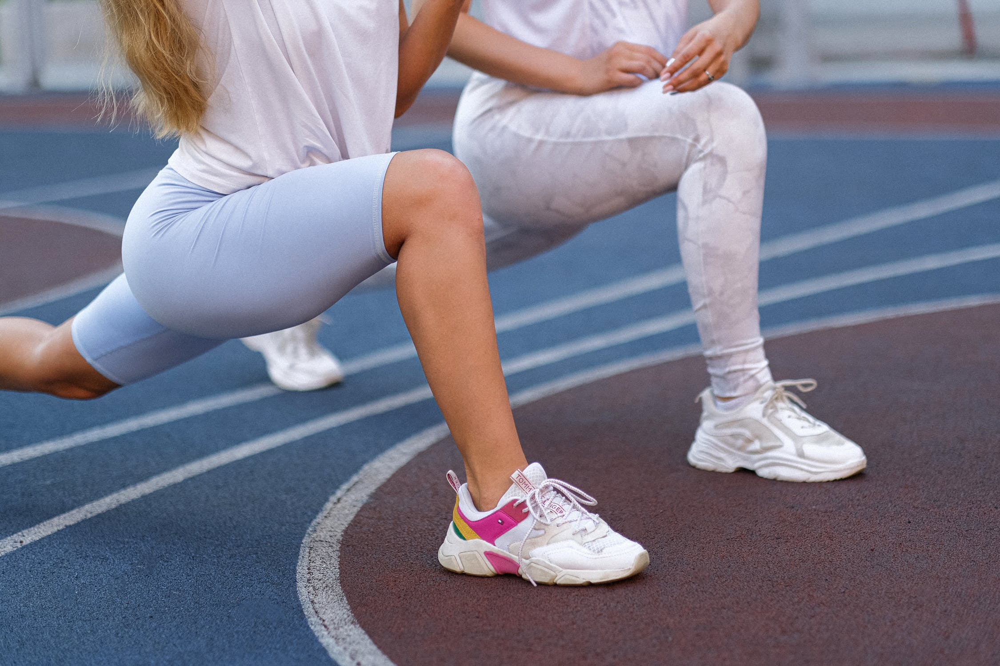
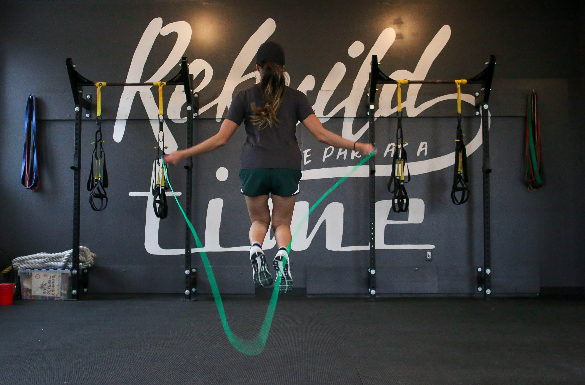
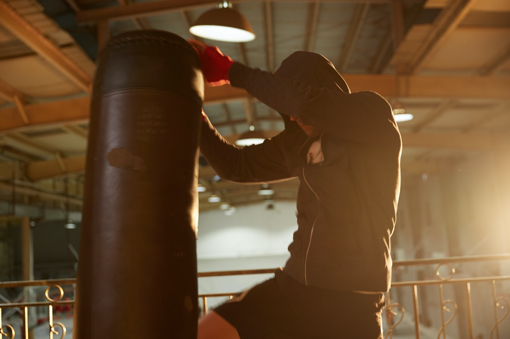
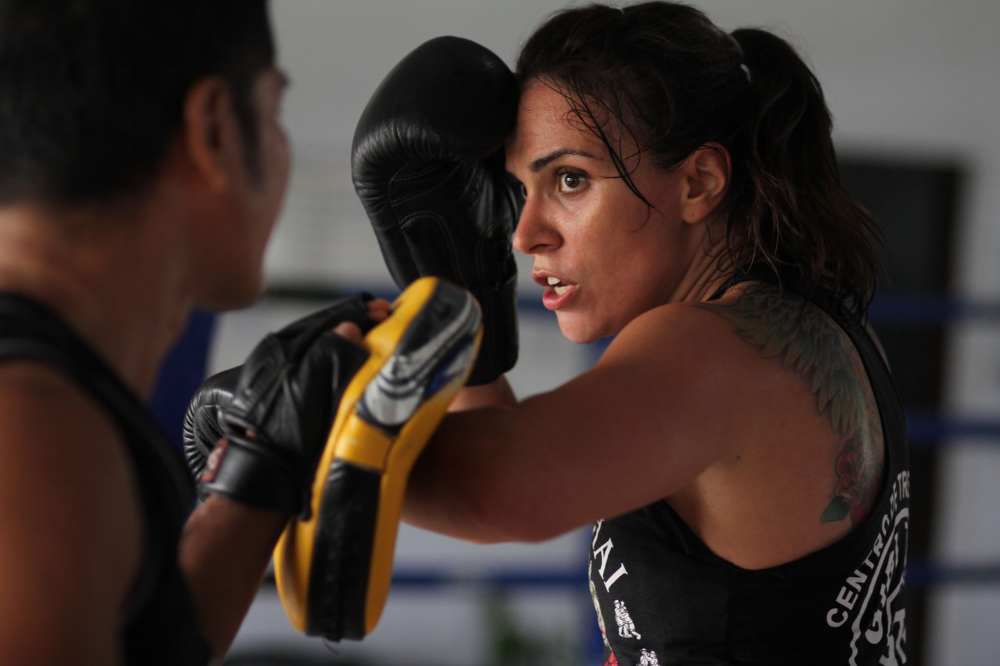

主な練習内容
ジムで行われている一般的な練習メニューをご紹介させていただきます。
準備運動とストレッチ
K-1において身体の柔軟性はとても重要です。硬い方でも徐々に柔らかくなっていきますので、無理はせずじっくり時間をかけて行いましょう。また身体の柔らかさは怪我の防止にもなりますので毎回キチンと行いましょう。

縄跳び
準備運動のひとつとして身体を温めほぐす為に行います。またスタミナやリズム感を養う為にも重要なトレーニングです。１ラウンド（３分）跳び続けリズム良く跳ぶ事を目標に行います。

シャドートレーニング
鏡の前に立って、しっかりとしたフォームを身につけるために行うトレーニングです。鏡で自分のフォームをチェックし、パンチ・キックの練習をします。また、ラウンドを重ねて行うことでスタミナを養う事もできる練習です。攻撃の練習と一緒にガードの練習を入れればガード技術も身につきます。
サンドバッグ
サンドバッグにパンチ・キックを打ち込み、パンチ力やキック力を強化します。また、相手との距離感も養えます。続けて打ち込む事でコンビネーションやスタミナの向上にも効果があります。

ミットトレーニング
トレーナーの指示に従い、パンチ・キックをミットに打ち込みます。主にスタミナの向上を目的とした練習ですが、コンビネーションや基本技術の向上にも効果があります。トレーナーがその人の力量に合わせて行っていく練習です。

マススパーリング
グローブをつけて５０％くらいの力でお互いに打ち合うトレーニングです。相手に当てる事よりも、コンビネーションでの攻撃を養う練習です。キックはレッグプロテクターを着けて行い、レベルによりヘッドギアを着けて行います。